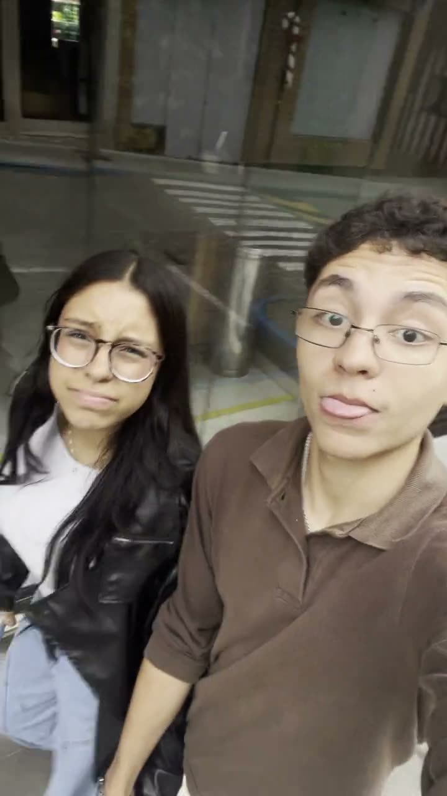

Para Alicia, com amor.
todos os
momentos
[ uma pequena coleção ]
Não é sobre ter registro de tudo.
É sobre olhar para qualquer segundo nosso e pensar:
eu viveria isso outra vez.
para os dias barulhentos,
os silêncios confortáveis
e tudo que existe no meio.
I — 01
quando o mundo
fica mais leve
Você transforma instantes comuns
em lugares onde eu quero ficar.
se o tempo tem um som
o meu favorito
é a sua risada
no meio dele.
II — 02
o jeito que
a vida acontece
Sem roteiro. Sem pose.
Só a gente sendo a gente.

III — a trilha
Nights
Frank Ocean
Uma música para atravessar a noite
e chegar do outro lado com você.
Alicia × LC — arquivo 001